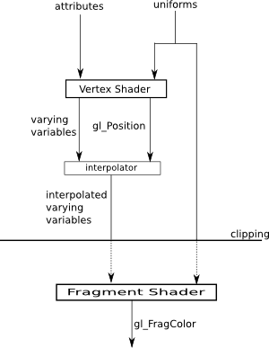

WebGL is the version of OpenGL that is used to program graphics applications that run in a web browser. It is used by three.js for fast, high-quality graphics. But it can also be used directly from JavaScript, using the WebGL API. Many WebGL functions will be familiar to you from OpenGL. However, WebGL has no fixed function pipeline. This means on the one hand that it is a smaller and simpler API than standard OpenGL and on the other hand that it is harder to use, since you have to provide vertex and fragment shaders for even the most simple use. (See Section 11 for introductions to the fixed function pipeline and to the idea of shaders.)
This section will explain the basic ideas of WebGL, with enough information to write simple applications. Future sections will provide more details.
WebGL renders 3D images to an HTML <canvas> element. Recall that if canvas is a JavaScript variable that refers to a <canvas> element, then canvas.getContext("2d") returns a graphics context that can be used for 2D drawing. To get a WebGL context for 3D drawing to the canvas, you should be able to call canvas.getContext("webgl"). However, since WebGL is still somewhat experimental in some browsers, this call might return null even though WebGL is actually supported. In that case, you can try canvas.getContext("experimental-webgl"). It is also true that some browsers don't support WebGL (notably Internet Explorer, at least through Version 10), and others block support for certain "blacklisted" graphics cards (notably Chrome), so this second version of the call might also fail. So, a WebGL application would use code similar to the following for initialization:
try {
var canvas = document.getElementById("canvasID");
gl = canvas.getContext("webgl");
if (!gl) {
gl = canvas.getContext("experimental-webgl");
}
}
catch (c) {
gl = null;
}
if (gl == null) {
// ... Report error: Could not initialize WebGL
}
The name gl is typically used for the variable that represents a WebGL graphics context. It is an object of type WebGLRenderingContext. It contains all the functions and constants of the WebGL API. In OpenGL 1.0, the names of functions and constants started with "gl" or "GL_". For WebGL, these prefixes are omitted, but the functions and constants are properties of the WebGLRenderingContext object, so you end up using names such as gl.Clear and gl.COLOR_BUFFER_BIT. For example, the commands for filling the canvas with black and clearing the depth buffer at the same time become:
gl.ClearColor(0,0,0,1); gl.Clear( gl.COLOR_BUFFER_BIT | gl.DEPTH_BUFFER_BIT );
Similarly, the command for enabling the depth test in WebGL is
gl.enable( gl.DEPTH_TEST );
but remember that the "gl" is a conventional name only and could be any variable name.
Though many WebGL functions will be familiar to you from OpenGL 1.0, the mechanics of drawing are quite different because of the mandatory use of shaders and because the functions glBegin/glEnd and their associated functions such as glVertex do not carry over to WebGL. Let's consider shaders first.
WebGL shaders are programs written in GLSL ES 1.0 (OpenGL Shader Language for Embedded Systems, Version 1.0). The shader language is similar to the C programming language, with some restrictions and some extensions. WebGL supports only a minimal version of the language, which adds even more restrictions to the full version. In particular, while and do..while loops are not supported, and for loops are available only in a limited form for which the number of iterations can be determined at compile time. These restrictions (along with the lack of recursive functions) mean that it is not possible to write completely general programs in the WebGL shader language. However, it does have good support for the computations that are typically done in OpenGL-style graphics. In fact, it has a large number of types, operators, and functions to support those computations.
A WebGL shader program consists of a vertex shader and a fragment shader. Each of the two shaders is itself a small program, with its own main() function. WebGL has functions for compiling shaders from strings that contain the shader source code, and it has a function for selecting the shader program that will be used for rendering. Recall that the purpose of the rendering pipeline is to render "primitives" such as lines, triangles, and triangle strips. When the WebGL graphics context is used to render a primitive, the vertex shader is executed for each vertex of the primitive. Then, after the primitive has gone through the clipping and rasterization stages of the rendering pipeline, the fragment shader is executed for each fragment (that is, each pixel) in the primitive. The point is to produce a color for each pixel—which might then go through further processing, such as the depth test or blending with the current pixel color.
It is important to understand how data flows when a primitive is rendered: from JavaScript, into WebGL, and through the shaders and the other parts of the rendering pipeline. JavaScript is used to set up the shader program and to set WebGL state variables such as the enabled state of the depth test. It also has to specify all the data that will be used in the shaders to render the primitive. The data can include things familiar from OpenGL such as vertex coordinates, normal vectors, colors, texture coordinates, textures, and transformation matrices. But it can also include any other data that shader programmers decide to use in their programs. The data can be divided into two general categories corresponding to two kinds of variables in shader programs: uniforms and attributes. Uniforms, or uniform variables, have the same value for all points in a primitive; they are uniform over a primitive. Attributes, or attribute variables, can have a different value for each vertex in a primitive. Vertex coordinates are attributes, since each vertex has its own coordinates. Transformation matrices are almost certainly uniforms. Color could be either an attribute or a uniform, depending on the program. It is important to understand that the values for attributes and uniforms come from JavaScript and are used in the shader program. Attributes can be used only in the vertex shader; each execution of the vertex shader can have a different value for an attribute. Uniforms can be used both in the vertex shader and in the fragment shader.
Attributes and uniforms allow information to be input from JavaScript into the shader program. Varying variables are used to pass information from the vertex shader to the fragment shader. Varying variables are used only the shader program, and JavaScript does not have access to them. A varying variable is shared by the vertex shader and the fragment shader. The vertex shader assigns a value to the varying variable. Since the vertex shader is executed for each vertex of a primitive, each vertex can have a different value for the varying variable. When the fragment shader executed for a given pixel, the value of the varying variable for that pixel is obtained by interpolating the values of the variable from the vertices of the primitive. For example, if the varying variable is color, then interpolation will blend the colors of the vertices to produce the color for a pixel in the interior of the primitive, as in the famous color triangle shown here.
In addition to attributes, uniform variables, and varying variables, a shader can define regular global and local variables for use within the shader. There are also a few predefined variables for use in shaders. For example, the vertex shader should assign a value to the predefined variable gl_Position, a vector of four numbers that specify homogeneous coordinates for the vertex in the clip coordinate system. And the fragment shader should assign a value to gl_FragColor, a vector of four numbers giving the red, green, blue, and alpha components of the fragment's color.
The following diagram shows the flow of data through the shaders. Values for attributes and uniforms come from JavaScript, and the value of gl_FragColor is passed on to later stages in the rendering pipeline.

We will consider the shader language GLSL ES 1.0 in more detail in the next section. Here, we do just enough to write a couple of examples that use attributes, uniforms, and varying variables. We will not use any transformations, so drawing will be done directly in clip coordinates, that is, using an orthographic projection with x, y, and z limited to the range −1 to 1. In fact, we will limit our drawing for now to 2D.
The shading language defines basic types float, int, and bool. It defines types vec2, vec3, and vec4 representing vectors of 2, 3, and 4 floats. And it has types mat2, mat3, and mat4 to represent matrices of floats. The type mat4 represents a 4-by-4 matrix and is often used to represent modelview and projection transformation matrices.
The language is very flexible about how to refer to the elements of a vector. For example, the four numbers that make up a vec4, v can be referred to as v[0], v[1], v[2], and v[3]; or as v.x, v.y, v.z, and v.w; or as v.r, v.g, v.b, and v.a. The predefined shader variables gl_Position and gl_FragColor are of type vec4. The use of vec4 to represent color explains the last notation for the elements of a vec4.
A value of type vec4 can be created from four floating-point values using a function of the same name. For example, if color is of type vec4, then the statement
color = vec4( 1.0, 1.0, 0.0, 1.0 );
sets color to represent an opaque yellow. (It is worth noting that this cannot be written as vec4(1,1,0,1) since the shader language will not automatically convert integer values to floating point values!) The function vec4 is referred to as a "constructor", but note that a vec4 is not an object and that there is no new operator. Of course, there are similar constructors for vec2 and vec3.
The vertex and fragment shaders are compiled separately. Each shader must have a main() function, which takes the form
void main() {
// code goes here
}
A shader can have additional functions and it can have global variables, which are defined outside any function. Global variables in a vertex shader can optionally be declared to be attribute, uniform, or varying. Global variables in a fragment shader can, optionally, be uniform or varying.
Let's say that we are drawing in 2D and that each primitive will have a uniform color. The coordinates of the vertices of a primitive can then be specified as an attribute variable of type vec2, and the color by a uniform of type vec3. In the vertex shader, the value of the vec4 gl_Position must be set to the homogeneous coordinates of the vertex. The x and y coordinates for gl_Position come from the attribute, while z and w are 0 and 1 respectively. Here is the complete source code for a vertex shader that does this:
attribute vec2 coords; // xy-coordinates for this vertex
void main() {
gl_Position = vec4( coords.x, coords.y, 0.0, 1.0 );
}
The uniform color variable is needed only in the fragment shader, where the color of the pixel is specified. To get a value for gl_FragColor, we have to add an alpha component to the RGB components from the color uniform variable. Here is source code for the fragment shader:
precision mediump float;
uniform vec3 color;
void main() {
gl_FragColor = vec4( color.x, color.y, color.z, 1.0 );
}
The strange first line needs some explanation. A variable in a shader can be declared with a precision, which corresponds roughly to the number of bits used for the variable. The precision can be highp (at least 32 bits), mediump (at least 16 bits), or lowp (at least 8 bits). You can, for example, declare a variable
lowp int code;
if you know that the value of code will be in the range -128 to 127. By default, integer and floating point variables in the vertex shader are highp. In the fragment shader, integer variables are highp, but for some reason there is no default precision for floating point variables. The statement "precision mediump float;" establishes mediump as the default precision for floating point variables, including vectors of floats. I use mediump here since highp is not guaranteed to be supported in the fragment shader and since mediump is likely to be enough precision for fragment shader computations. In my examples, I will set mediump to be the default floating point precision in fragment shaders, and I will otherwise ignore the whole issue of precision.
Let's suppose that we want the color to be a varying variable instead of a uniform variable. In that case, we can provide the vertex colors as an attribute, and the fragment color will be computed by interpolating the vertex colors.
A varying variable must be declared in both the vertex shader and the fragment shader. The name and type must be the same in both shaders. The vertex shader should assign a value to the variable. The fragment shader will receive the interpolated value in the variable of the same name.
In our example, we need two variables in the vertex shader one for the attribute representing the vertex color and one for the varying variable that is used to forward the color to the fragment shader. The vertex shader simply needs to copy the value from the attribute to varying variable. Here is the source code for the vertex shader:
attribute vec2 coords; // xy-coordinates for this vertex
attribute vec3 vertexColor; // RGB color for this vertex
varying vec3 color; // color to be interpolated for the fragment shader
void main() {
gl_Position = vec4( coords.x, coords.y, 0.0, 1.0 );
color = vertexColor;
}
and here is the fragment shader; the only difference from the previous fragment shader is that now the color is a varying variable instead of a uniform:
precision mediump float;
varying vec3 color;
void main() {
gl_FragColor = vec4( color.r, color.g, color.b, 1.0 );
}
Now that we can write shaders, even if only trivial ones, we need to know how to use them in WebGL. The vertex and fragment shaders must be compiled and then added to a shader program. It is possible that one WebGL program might use several different shaders. For example, it might use one shader when drawing uniformly colored primitives and another when drawing primitives that use interpolated color. Three.js uses different shaders for rendering different Materials. This means that we need to have a way to keep track of several programs at once.
Shader programs, like textures and several other kinds of resource are stored on the server side of OpenGL, that is, at least conceptually, in the graphics card. Such resources are generally managed by a pattern that we can call generate and bind: A WebGL function is used to generate a new object of the specified type and return a value that is used to identify the resource. Often, the ID is just an integer. Another WebGL function is used to bind the object, that is, to tell the graphics card to use that object. Binding is an alternative to passing the object's ID to every function that operates on the object. In the case of shader programs, the generate and bind functions are actually called gl.createProgram and gl.useProgram. Vertex and fragment shaders also use the generate pattern, with the function gl.createShader.
To create a vertex shader, you need to first generate the shader object, then specify the source code for the shader, then tell WebGL to compile the shader. The source code is specified as an ordinary JavaScript string. If that string is vertexShaderSource, then the vertex shader can be created as follows:
var vsh = gl.createShader( gl.VERTEX_SHADER ); gl.shaderSource(vsh,vertexShaderSource); gl.compileShader(vsh);
It is always a good idea to check for errors in the compilation. This can be done by calling the boolean-valued function
gl.getShaderParameter(vsh, gl.COMPILE_STATUS)
where vsh is the identifier returned by gl.createShader(). The return value is true if the compilation succeeded. If not, you can get a listing of the errors by calling
gl.getShaderInfoLog(vsh);
After an unsuccessful compilation, this function returns a string that contains a list of compilation errors, including the line number in the shader source for each error.
Fragment shaders are created in exactly the same way, substituting gl.FRAGMENT_SHADER for gl.VERTEX_SHADER in the createShader function. A complete shader program is made by generating a program object, "attaching" vertex and a fragment shaders, and the "linking" the program. This is done as follows:
prog = gl.createProgram(); // prog is the program identifier gl.attachShader(prog, vsh); // vsh is the vertex shader identifier gl.attachShader(prog, fsh); // fsh is the fragment shader identifier gl.linkProgram(prog);
It is good practice to check for linking errors, which can occur, for example, if a varying variable has different types in the vertex and fragment shaders or if the vertex and fragment shader together use more uniform variables than are allowed by the WebGL implementation. We can put all of this, including the check for link errors, together into a function for creating a shader program:
/* Creates a program for use in the WebGL context gl, and returns the
* identifier for that program. If an error occurs while compiling or
* linking the program, an exception of type String is thrown. The error
* string contains the compilation or linking error. If no error occurs,
* the program identifier is the return value of the function.
*/
function createProgram(gl, vertexShaderSource, fragmentShaderSource) {
var vsh = gl.createShader( gl.VERTEX_SHADER );
gl.shaderSource(vsh,vertexShaderSource);
gl.compileShader(vsh);
if ( ! gl.getShaderParameter(vsh, gl.COMPILE_STATUS) ) {
throw "Error in vertex shader: " + gl.getShaderInfoLog(vsh);
}
var fsh = gl.createShader( gl.FRAGMENT_SHADER );
gl.shaderSource(fsh, fragmentShaderSource);
gl.compileShader(fsh);
if ( ! gl.getShaderParameter(fsh, gl.COMPILE_STATUS) ) {
throw "Error in fragment shader: " + gl.getShaderInfoLog(fsh);
}
var prog = gl.createProgram();
gl.attachShader(prog,vsh);
gl.attachShader(prog, fsh);
gl.linkProgram(prog);
if ( ! gl.getProgramParameter( prog, gl.LINK_STATUS) ) {
throw "Link error in program: " + gl.getProgramInfoLog(prog);
}
return prog;
}
Note, however, that it is possible to use the same vertex or fragment shader in several shader programs, and this function does not support such sharing.
To use the shader program in the WebGL graphics context, you just have to call
gl.useProgram( prog );
where prog is the identifier for the program object. The program will then be used for any primitives rendered by the graphics context until gl.useProgram() is called again to install a different shader program.
One remaining problem is how to get shader source code into a string. Although the compiler doesn't care about ends-of-line, breaking the source into lines can make it more readable and can facilitate more useful compiler error messages. The source can be broken into lines with "\n" characters. Fore example:
var fsource =
"precision mediump float;\n" +
"varying vec3 color;\n" +
"void main() {\n" +
" gl_FragColor = vec4( color.r, color.g, color.b, 1.0 );\n" +
"}\n";
However, this can be hard to read and edit. Three.js puts lines of the source code into an array, and then applies the join() method, which puts the elements of the array into a string, separated by a specified string. For example:
var fsource = [
"precision mediump float;",
"varying vec3 color;",
"void main() {",
" gl_FragColor = vec4( color.r, color.g, color.b, 1.0 );",
"}"
].join("\n");
Another alternative, which is used on learningwebgl.com is to put the source code into a <script> with a made-up script type. For example:
<script type="x-shader/x-fragment" id="fsource">
precision mediump float;
varying vec3 color;
void main() {
gl_FragColor = vec4( color.r, color.g, color.b, 1.0 );
}
</script>
Since the web browser will not recognize the script type, it will not try to execute the script. However, the text in the script can be retrieved using some slightly fancy JavaScritpt code:
var element = document.getElementById("fsource"); // use the ID from the <script>
var fsource = "";
var node = element.firstChild;
var str = "";
while (node) {
if (node.nodeType == 3) // this is a text node
str += node.textContent;
node = node.nextSibling;
}
The advantage of this technique is that the source code is easier to read and edit. (The disadvantage is that it seems a little sneaky.)
Uniform variables and attributes are used in shader programs, which run in the WebGL server (that is, generally, in the graphics card). But their values come from JavaScript. There has to be some way of communicating their values from JavaScript to WebGL. To do this, you need a surprising number of different functions from the WebGL API. (As for varying variables, remember that they are purely internal to the shaders, and JavaScript does not do anything with them.)
First of all, attributes and uniforms are identified by their locations in the shader program. These locations are assigned by the shader compiler and linker, so you need to create the shader program before you can query the location of its variables. Suppose that prog is the JavaScript variable that refers to the shader program, as returned for example by the createProgram() function given above. Then you can get the location of a uniform variable in the program by calling
gl.getUniformLocation( prog, variableName );
where variableName is a string giving the name of the variable in the shader program. (Later, we'll see that uniform variables can be arrays and structs, and in that case what you need here is more complicated than a simple name.) For example, if the uniform variable is named "color", you can say
uColor = gl.getUniformLocation( prog, "color" );
You would usually do this just once, as part of initialization, and save the value in a global variable. In my examples, the name of the JavaScript variable that holds the location of a uniform will be based on the name of the uniform in the shader program, with a "u" added at the beginning. Attribute locations are similar, except that the function for querying the location is gl.getAttribLocation(). (Note that it's "AttribLocation", not "AttributeLocation".) For example:
aCoords = gl.getAttribLocation( prog, "coords" );
This is the only time where the name of the uniform or attribute is used in JavaScript. From then on, it's the location that you need.
Once you have the location of a uniform, you can set its value at any time. The shader variable will use the value for all subsequent drawing operations, until you explicitly set its value again. There are two families of JavaScript functions for setting uniform values: gl.uniform* and gl.uniformMatrix*, where the "*" is a suffix that is different for different types of values. The naming is similar to the glVertex* family of function in OpenGL 1.0. To set a value for a uniform of type vec3, you can use gl.uniform3f. For example,
gl.uniform3f( uColor, 1.0, 1.0, 0.8 );
Here, uColor is the location of the uniform, as returned by gl.getUniformLocation(). The "3" in the name indicates that you are providing 3 numbers; it can be 1, 2, 3, or 4. The "f" in the name means that the numbers are floating point values; the only alternative is "i" for integer values. (For bool values, use "i" in the name, and pass 0 for true or 1 for false.) If you add "v" to the name, then the values are passed in an array. For example,
gl.uniform3fv( uColor, [ 1.0, 1.0, 0.8 ] );
Other examples include:
gl.uniform1i( uTest, 1 ); // "test" would be of type int or bool gl.uniform4f( uVector, 5, 4.5, 3.13, 7 ); // "vector" of type vec4 gl.uniform2f( uCenter, 50, 50 ); // "center" of type vec2
For uniform shader variables that are matrices, the values are always passed in an array, and the function that you need is gl.uniformMatrix2fv for a mat2, gl.uniformMatrix3fv for a mat3, or gl.uniformMatrix4fv for a mat4. Even though the matrix is two-dimensional, the values are stored in a one dimensional array. The values are loaded into the array in what is called "column-major" order, that is, the first column is listed from top to bottom, then the second, and so on. However, we won't work with matrix values directly; instead, they will be managed using a matrix library and will be kept in a form suitable for use with gl.uniformMatrix*. For example, if transformMatrix is a JavaScript variable that stores the values for a transformation matrix, and if uTransform is the location of the corresponding mat4 uniform variable in the shader program, then the value of that uniform could be set as follows:
gl.uniformMatrix4fv( uTransform, false, transformMatrix );
The value of the second parameter must be false. (The same function in standard OpenGL allows true as the value, but WebGL does not, at least in Version 1.)
Turning now to attributes, the situation is more complicated since an attribute generally needs a different value for each vertex in a primitive. The complete set of data for the attribute is copied in a single operation from a JavaScript array into memory that is accessible to the graphics card. Setting things up to make that operation possible is non-trivial.
First of all, a regular JavaScript array is not suitable for this purpose. For efficiency, we need the data to be in a block of memory holding numerical values in successive memory locations, and regular JavaScript arrays don't have that form. To fix this problem, a new kind of array, called typed arrays, was introduced into JavaScript. A typed array can only hold numbers of a specified type. There are different kinds of typed array for different kinds of numerical data, but we will only use one kind for now: Float32Array. Typed arrays aren't supported by every web browser, but they are supported by every browser that implements WebGL, so they can safely be used in WebGL programs.
A typed array has a fixed length, which is assigned when it is created by a constructor. The constructor takes two forms: One takes an integer parameter giving the number of elements in the array; the other takes a regular Java array of numbers as parameter and initializes the typed array to have the same length and elements as the parameter. For example:
var rgb = new Float32Array( 12 ); // space for 12 floats, maybe giving 4 colors var coords = new Float32Array( [ 0,0.7, -0.7,-0.5, 0.7,-0.5 ] ); // array of 6 floats
Once you have a typed array, you can use it much like a regular array. The length of the typed array rgb is rgb.length, and its elements are referred to as rgb[0], rgb[1], rgb[2], and so on. However, if you assign a value to an element of a typed array, it will be converted to the correct numerical type before being stored in the array.
Before data can be transferred from JavaScript into an attribute variable, it must be placed into a typed array. When possible, you should work with typed arrays directly rather than working with regular JavaScript arrays and copying the data into typed arrays later.
Inside WebGL, the attribute data will be stored in a block of memory called a vertex buffer object or VBO. (VBOs were discussed briefly in Section 11.) VBOs are managed using a generate-and-bind pattern: To use a VBO, you must first call a function to generate it. That function returns an identifier for the newly created VBO. In order to store data into VBO, you must bind it. The function that stores data into a VBO doesn't mention the VBO—instead, it uses the VBO that is currently bound. The function for generating a buffer is gl.createBuffer(). You will want to save the value that it returns. For example:
aCoordsBuffer = gl.createBuffer();
In my examples, the variable name "aCoordsBuffer" is used to store the identifier for a buffer that will hold data for the attribute variable named "coords" in the shader program. The command for binding the buffer is then
gl.bindBuffer(gl.ARRAY_BUFFER, aCoordsBuffer);
The first parameter is there because buffers can store data for several different uses. The value gl.ARRAY_BUFFER is used when the buffer is being used to store values for an attribute. Remember that when you bind a buffer, you are only saying which buffer you want to use for subsequent commands. To copy data into the buffer that is currently bound, use gl.bufferData(). For example:
gl.bufferData(gl.ARRAY_BUFFER, coords, gl.STATIC_DRAW);
The second parameter is the typed array that holds the data on the JavaScript side. All the elements of the array are copied into the buffer, and the size of the array determines the size of the buffer. Note that this is a straightforward transfer of raw data bytes; WebGL does not remember whether the data represents floats or ints or some other kind of data.
The third parameter to gl.bufferData is one of the values gl.STATIC_DRAW, gl.STREAM_DRAW, or gl.DYNAMIC_DRAW. It is a hint to WebGL about how the data will be used, and it helps WebGL to manage the data in the most efficient way. The value gl.STATIC_DRAW means that you intend to use the data many times without changing it. For example, if you will use the same data throughout the program, you can load it into a buffer once, during initialization, using gl.STATIC_DRAW. WebGL will probably store the data on the graphics card itself where it can be easily accessed by the graphics hardware. The second value, gl.STEAM_DRAW, is for data that will be used only once, then discarded. (It can be "streamed" to the card when it is needed.) The value gl.DYNAMIC_DRAW is somewhere between the other two values; it might be used for data that will be used a couple of times and then discarded. As an example, one of my sample programs draws the same triangle many times with different colors for the vertices. Both the vertex coordinates and vertex colors are attribute variables. I load the vertex coordinates into their buffer at the beginning of the program, using gl.STATIC_DRAW. I load the color values into their buffer every time I draw a triangle, using gl.STREAM_DRAW.
There are two more steps to using the data from a buffer. For one thing, you have to tell WebGL to take the attribute data from a buffer, which is done by calling
gl.enableVertexAttribArray(aCoords);
where the parameter is the location of the attribute in the shader program, as returned by a call to gl.getAttribLocation(). (If you don't call gl.enableVertexAttribArray() for an attribute, then WebGL will use a constant value for that attribute. The constant can be specified using the gl.vertexAttrib* family of functions, which are very similar to the gl.uniform* functions; however, I will never use that option in these notes.) This command has nothing to do with the particular buffer that is currently bound. It just turns on the use of buffers for the specified attribute. Generally, it is resonable to call this method just once during initialization.
Finally, before you draw something using the buffer, you have to tell WebGL where to find the data and how to interpret it. This is done with gl.vertexAttribPointer(). Note that this method applies to the buffer that is currently bound, and it tells WebGL to take values for the attribute from that buffer. Often, you call gl.bindBuffer() just before calling gl.vertexAttribPointer(), but that is not necessary if the desired buffer is already bound. For example:
gl.bindBuffer(gl.ARRAY_BUFFER, aCoordsBuffer); gl.vertexAttribPointer(aCoords, 2, gl.FLOAT, false, 0, 0);
The first parameter is the attribute location. The second is the number of values per vertex. For example, if you are providing values for a vec2, the value will be 2 and you will provide two numbers per vertex; for a vec3, the value would be 3; for a float or int, the value would be 1. The third parameter specifies the type of each value. Here, gl.FLOAT indicates that each value is a 32-bit floating point number. Other values include gl.BYTE, gl.UNSIGNED_BYTE, gl.UNSIGNED_SHORT, and gl.SHORT for integer values. Note that the type of data does not have to match the type of the attribute variable; in fact, attribute variables are always floating point values in the shader program. I will always use false, 0, and 0 for the remaining three parameters. They add flexibility that I won't need; you can look them up in the documentation if you are interested.
Remember that there can be more than one attribute in a program. The vertex coordinates will almost certainly be an attribute, but any quantity that varies from vertex to vertex can be an attribute. One of the examples earlier on this page used a color attribute. Soon, we will want to add texture coordinates, normal vectors, and material properties as possibilities. The data for each attribute has to be loaded into a buffer before drawing the primitive that uses that data, using gl.bufferData(). You have to call gl.enableVertexAttribArray() and gl.vertexAttribPointer() for each attribute. And before calling either gl.vertexAttribPointer() or gl.bufferData(), you need to make sure that the appropriate buffer is bound using gl.bindBuffer().
Finally, you are ready to draw the primitive. That can be done by calling the function gl.drawArrays(). (Later, we will see an alternative to this function, gl.drawElements().) For example,
gl.drawArrays(gl.TRIANGLE_FAN, start, vertexCount);
The first parameter tells which of the seven primitives to draw. The second and third parameters are integers that tell which part of the data to use; they make it possible to put the data for several primitives into the buffers at the same time. The buffers contain data for a certain number of vertices. The second parameter gives the number of the first vertex to be rendered. The third parameter tells how many vertices to render. Often, the start position is 0 and the vertexCount is the total number of vertices.
There is a lot to take in here. For both uniforms and attributes, you need to get the location of the variable from the shader program using gl.getUniformLocation() or getAttribLocation(). You will generally do this just once, just after creating the shader program. Usually, you will store the locations in global variables.
For a uniform variable, the only other thing that you need to do is set its value using one of the functions gl.uniform* or gl.uniformMatrix*. You can do this at any time, and you will often do it just before each primitive that you draw.
For an attribute, there are many steps. You need to use gl.createBuffer() to generate a VBO to hold the data. Again, this is probably something that you will do once, during initialization. You need to call gl.enableVertexAttribArray() for the attribute, and again this is something that only needs to be done once.
You need to store the data for the attribute in a typed array such as a Float32Array, send that data to the buffer using gl.bufferData() and tell WebGL where to find the data using gl.vertexAttribPointer(). And before calling either of these functions, you must have called gl.bindBuffer() to specify the buffer to which they apply. You need to call gl.bufferData() whenever the data changes. You need to call gl.vertexAttribPointer() before drawing something, and you need to re-call it if you want to switch to another buffer as the source of the data for the attribute.
Finally, once everything is set up, you can actually draw the primitive using gl.drawArrays(). Here are some actual examples from a sample program:
uColor = gl.getUniformLocation(prog, "color"); // get a uniform location
aCoords = gl.getAttribLocation(prog, "coords"); // get an attribute location
gl.uniform3f( uColor, 1, 0, 0 ); // set a uniform value (for a vec3)
aCoordsBuffer = gl.createBuffer(); // generate a buffer
gl.enableVertexAttribArray(aCoords); // make data for coords come from a buffer
gl.bindBuffer(gl.ARRAY_BUFFER, aCoordsBuffer); // specify buffer for next two commands
gl.bufferData(gl.ARRAY_BUFFER, vertices, gl.STREAM_DRAW); // send data to buffer
// Note: vertices is a Float32Array
gl.vertexAttribPointer(aCoords, 2, gl.FLOAT, false, 0, 0); // specify data source
gl.drawArrays(gl.TRIANGLE_FAN, 0, vertexCount); // render a primitive
These commands are from the sample program webgl-polygon.html, which draws solid-color polygons. In that program, the color is a uniform variable. Another sample program, webgl-color-triangle.html, draws the famous three-color color triangle and uses a varying variable for vertex color. Both of these examples are pretty simple, and it will be worth your while to read the source code. Neither program uses any transformations. The drawing is done on the xy-plane using the default coordinate system in which x and y are limited to the range −1 to 1. The shader source code is in string constants in the first example, and is taken from scripts with bogus types in the second.
To end this section, I'll remind you that using gl as the name of the WebGL graphics context is a convention and that any variable name could be used. You should understand that when I refer to something like "the function gl.drawArrays", I really mean "the function drawArrays in the WebGL graphics context."